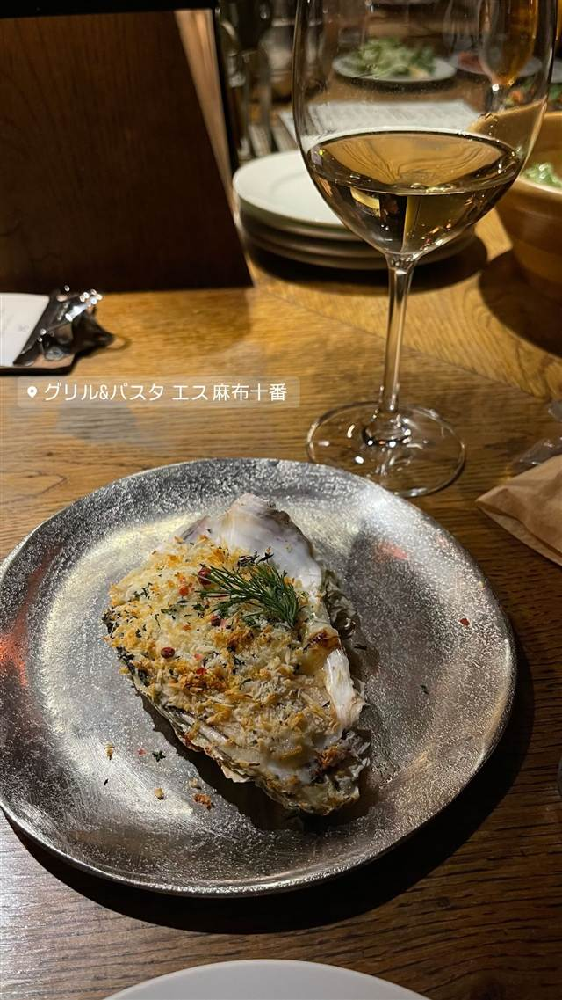
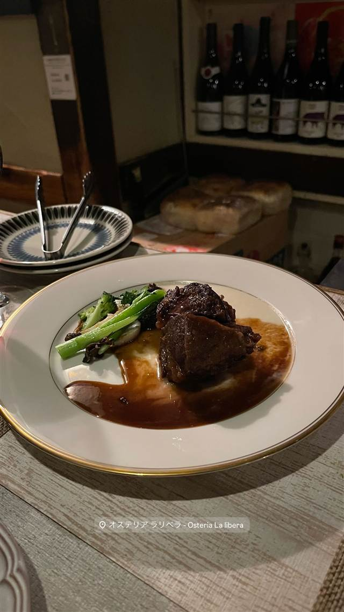

BANDERUOLA-Cuscusseria-バンデルオーラ
専用のテラコッタ器で仕上げるシチリア伝統の魚介クスクス
BANDERUOLA-CUSCUSSERIA-バンデルオ…
2015年開業、恵比寿でシチリア・トラーパニ地方の郷土料理クスクスを専門にするイタリアン。北アフリカの影響を受けた魚介のクスクスを、伝統的なテラコッタの器で手間ひまかけて仕上げる。
TRIVIA
へえ、という話
- クスクスは北アフリカ発祥だが、シチリア島トラーパニでは魚介と合わせる郷土料理として定着している
- 専用のテラコッタの器「マファラッダ」で蒸し上げる手間のかかる製法を用いる
REVIEWS
みんなの声
3.60食べログ
「黒トリュフのピチと隠れ家感」に注目
- 黒トリュフと冠地鶏のクリームソースのピチをもちもち食感と評価する声が多い
- 隠れ家感のある落ち着いた雰囲気がデートや女子会に向くという声がある
- 平日でも満席になりやすく予約が必須だという声が多い
- 味付けが濃いめで席料が別途かかる点を指摘する声もある
食べログ
| 創業 | 2015年5月4日開業 |
|---|---|
| 系譜 | シチリア島トラーパニ地方の郷土料理「クスクス」を専門とするイタリア料理店。 |
| 看板 | 魚介のクスクス、パスタ |
| こだわり | 北アフリカの影響を受けたトラーパニ式クスクスを再現。粗挽きデュラム小麦を手打ちで粒状にし、専用のテラコッタの器（マファラッダ）で香草を蒸した鍋の上に乗せて蒸し、魚介のブイヨンを吸わせて仕上げる。 |
| 予算 | 昼 ¥1,000～¥1,999 夜 ¥6,000～¥7,999 |
| 場所 | 恵比寿 東京都渋谷区恵比寿南2-7-5 |
| 注意 | 恵比寿南、吉水ビル1階。日・月曜定休。 |
食べたもの：パスタ / クスクス料理
NEARBY
近い店・同じ系統の店
-
 アメリカンダイニング 恵比寿駅
MADISON NEW YORK KITCHEN（マディソン ニューヨーク キッチン）
2014年開業、赤とゴールドの内装で味わう熟成肉のステーキ
夜 ¥5,000～¥5,999
アメリカンダイニング 恵比寿駅
MADISON NEW YORK KITCHEN（マディソン ニューヨーク キッチン）
2014年開業、赤とゴールドの内装で味わう熟成肉のステーキ
夜 ¥5,000～¥5,999
-

パスタ 麻布十番 Grill & Pasta es 麻布十番 六本木Ajitoの姉妹店、特製グリルで焼く牡蠣グラタン 昼 ¥1,000～¥1,999 夜 ¥4,000～¥4,999 -
 ピザ 恵比寿(東口)
PICICA PICICA PIZZA & PASTA
KNOCK新業態、飲めるピッツェリアの軽いナポリ風ピザ
昼 ¥1,000～¥1,999 夜 ¥8,000～¥9,999
ピザ 恵比寿(東口)
PICICA PICICA PIZZA & PASTA
KNOCK新業態、飲めるピッツェリアの軽いナポリ風ピザ
昼 ¥1,000～¥1,999 夜 ¥8,000～¥9,999
-
 ピザ 恵比寿駅(西口)
pizza marumo（ピッツァ マルモ）
和食出身の店主が薪窯で焼く、24時間発酵の低温生地ピザ
夜 ¥5,000～¥5,999
ピザ 恵比寿駅(西口)
pizza marumo（ピッツァ マルモ）
和食出身の店主が薪窯で焼く、24時間発酵の低温生地ピザ
夜 ¥5,000～¥5,999
-
 イタリアン 恵比寿駅
ブラチェリア デリツィオーゾ イタリア（旧店名：デリツィオーゾ イタリア）
炭火焼き「熾火」にこだわる、恵比寿2000年創業のイタリアン
夜 ¥6,000～¥7,999
イタリアン 恵比寿駅
ブラチェリア デリツィオーゾ イタリア（旧店名：デリツィオーゾ イタリア）
炭火焼き「熾火」にこだわる、恵比寿2000年創業のイタリアン
夜 ¥6,000～¥7,999
-

イタリアン 恵比寿駅 Osteria La libera（オステリア ラリベラ）恵比寿 日本料理からの転身シェフが鎌倉野菜と佐島の魚で作るパスタ 昼 ¥1,000～¥1,999 夜 ¥6,000～¥7,999